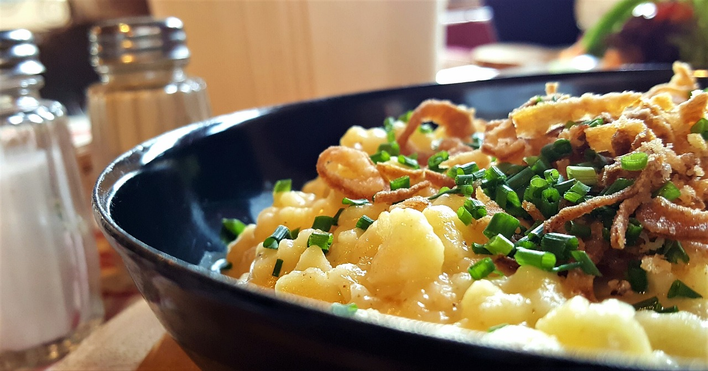

Tiroler Kasspatzln


10 Min.

simpel

14.08.2024
Zutaten für
-
1 Zwiebel(n), gewürfelt
-
Butter
-
400 ml Sahne
-
0.5 Bund Petersilie, gehackte
-
Salz und Pfeffer
-
200 g Emmentaler, geriebener
-
1 kg Spätzle, frische, aus dem Kühlregal
-
Fett für die Form
Zubereitung
Arbeitszeit ca. 10 Minuten
Gesamtzeit ca. 40 Minuten
Die gewürfelte Zwiebel in etwas Butter glasig anbraten. Mit der Sahne ablöschen, gehackte Petersilie dazugeben
und mit Salz und Pfeffer abschmecken. Kurz aufkochen lassen, dann die Hälfte vom Käse dazugeben und gut
durchrühren. Die Spätzle unterheben.
Die Mischung in eine gefettete Auflaufform geben und mit dem restlichen Käse bestreuen.
Im heißen Backofen bei 200 °C Ober-/Unterhitze ca. 20 Minuten überbacken, bis die gewünschte Bräune erreicht
ist.
Rezept erstellt von
Richard